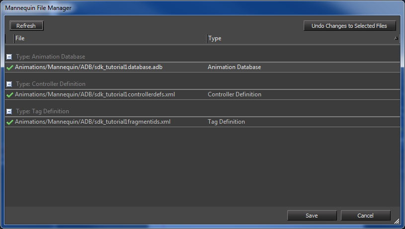

Overview

The Mannequin file manager is used to save (or reload) mannequin related files.
It opens up automatically whenever it detect a change in a mannequin file while the editor is open.
It also opens up when trying to exit the mannequin editor but you still have unsaved changes. This is determined by checking whether the structures in memory match the files exactly; this strongly discourages hand editing.
See the Mannequin Editor Tutorial 1 - Preview Setup, Fragments and Saving.